SPI supports data exchange in three-wire synchronous serial mode. With the chip select line, it supports hardware switching between master and slave modes, and supports communication over a single data line.
I2S is also a three-wire synchronous serial interface communication protocol. It supports four audio standards, including the Philips I2S standard, MSB-aligned standard, LSB-aligned standard, and PCM standard.
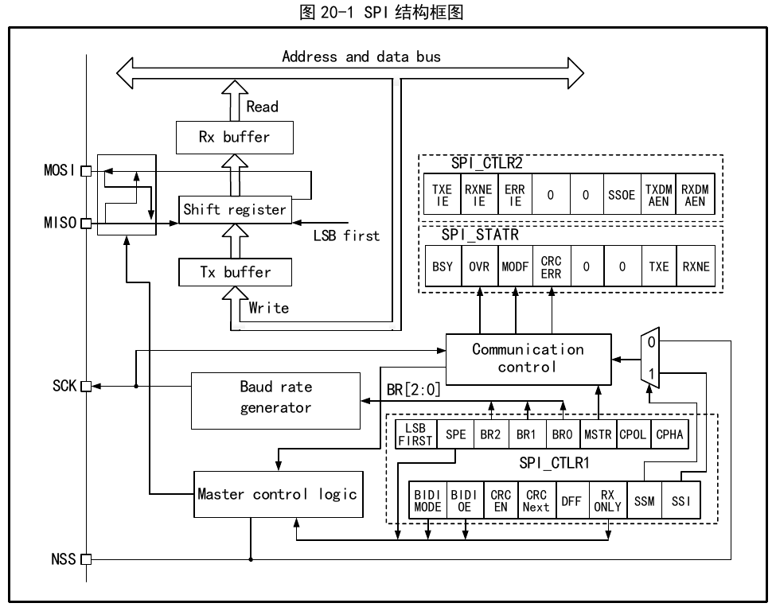
As can be seen from Figure 20-1, the four pins mainly related to SPI are MISO, MOSI, SCK, and NSS. Among them, the MISO pin is the data input pin when the SPI module operates in master mode, and the data output pin when operating in slave mode. The MOSI pin is the data output pin when operating in master mode, and the data input pin when operating in slave mode. SCK is the clock pin; the clock signal is always output by the master, and the slave receives the clock signal and synchronizes data transmission/reception. The NSS pin is the chip select pin, with the following usage:
The operating mode of SPI can be configured through CPHA and CPOL. CPHA set means the module samples data on the second clock edge and data is latched; CPHA not set means the SPI module samples data on the first clock edge and data is latched. CPOL indicates whether the clock stays high or low when there is no data. See Figure 20-2 below for details.
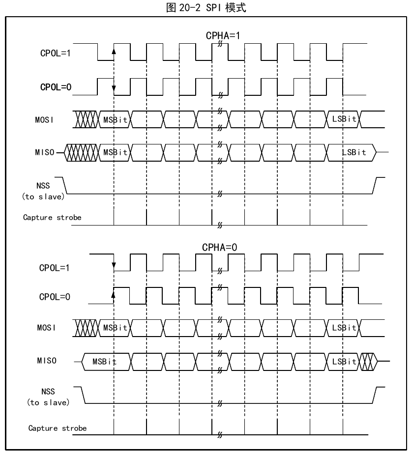
The master and device need to be set to the same SPI mode. Before configuring the SPI mode, the SPE bit must be cleared. The DFF bit determines whether a single SPI data length is 8-bit or 16-bit. LSBFIRST controls whether a single data word is sent MSB-first or LSB-first.
When the SPI module operates in master mode, SCK generates the serial clock. The steps to configure master mode are as follows:
To send data, simply write the data to be transmitted to the data register. SPI transfers data from the transmit buffer to the shift register in parallel, then shifts data out from the shift register according to the LSBFIRST setting. When data has been moved to the shift register, the TXE flag is set; if TXEIE has been set, an interrupt is generated. When the TXE flag is set, data needs to be written to the data register to maintain a complete data stream.
When receiving data, upon the last sampling clock edge of the data word, data is transferred in parallel from the shift register to the receive buffer, and the RXNE bit is set. If RXNEIE was previously set, an interrupt is also generated. At this point the data register should be read as soon as possible to retrieve the data.
When the SPI module operates in slave mode, SCK is used to receive the clock from the master, and the local baud rate setting has no effect. The steps to configure slave mode are as follows:
During transmission, when the first slave sampling clock edge appears on SCK, the slave begins transmitting. The transmission process moves data from the transmit buffer to the transmit shift register; once the data in the transmit buffer has been moved to the shift register, the TXE flag is set. If TXEIE was previously set, an interrupt is generated.
During reception, after the last sampling clock edge, the RXNE bit is set, and the byte received by the shift register is transferred to the receive buffer. Reading the data register retrieves the data from the receive buffer. If RXNEIE was set before RXNE is set, an interrupt is generated.
The SPI interface can operate in half-duplex mode, where the master device uses the MOSI pin and the slave device uses the MISO pin for communication. To use half-duplex communication, BIDIMODE must be set, and BIDIOE controls the transfer direction.
In normal full-duplex mode, setting the RXONLY bit puts the SPI module into receive-only simplex mode. After RXONLY is set, one data pin is released; the released pin differs between master and slave modes. Alternatively, the received data can be ignored and the SPI can be set to transmit-only mode.
The SPI module uses CRC verification to ensure the reliability of full-duplex communication. Separate CRC calculators are used for data transmission and reception. The polynomial used for CRC calculation is determined by the polynomial register. Different calculation methods are used for 8-bit data width and 16-bit data width respectively.
Setting the CRCEN bit enables CRC verification and simultaneously resets the CRC calculators. After transmitting the last data byte, setting the CRCNEXT bit causes the calculation result of the TXCRCR calculator to be transmitted after the current byte is sent. If the value of the last received shift register does not match the locally calculated RXCRCR value, the CRCERR bit is set. To use CRC verification, the polynomial calculator must be configured and the CRCEN bit set when configuring the SPI operating mode. The CRCNEXT bit should be set on the last word or half-word to send the CRC and verify the received CRC. Note: the CRC calculation polynomial must be the same for both the transmitter and receiver.
The SPI module supports using DMA to accelerate data communication speed. DMA can be used to fill data into the transmit buffer or to promptly retrieve data from the receive buffer. DMA uses RXNE and TXE as signals to promptly retrieve or send data. DMA can also operate in simplex or CRC-verified mode.
Master mode fault error
When the SPI operates in NSS pin hardware management mode and an external operation pulls the NSS pin low; or in NSS pin software management mode, the SSI bit is cleared; or the SPE bit is cleared, causing the SPI to be disabled; or the MSTR bit is cleared, the SPI enters slave mode. If the ERRIE bit has been set, an interrupt is generated. To clear the MODF bit: first perform a read or write operation on R16_SPI1_STATR, then write R16_SPI1_CTLR1.
Overrun error
If the master sends data while the slave's receive buffer still contains unread data, an overrun error occurs and the OVR bit is set. If ERRIE is set, an interrupt is generated. An overrun error should cause the current transmission to restart. Reading the data register followed by reading the status register clears this bit.
CRC error
When the received CRC verification word does not match the RXCRCR value, a CRC verification error occurs and the CRCERR bit is set.
The SPI module supports five interrupt sources. The transmit buffer empty and receive buffer not empty events set the TXE and RXNE flags respectively, generating interrupts when the TXEIE and RXNEIE bits are set. In addition, the three errors mentioned above — MODF, OVR, and CRCERR — also generate interrupts when the ERRIE bit is enabled.
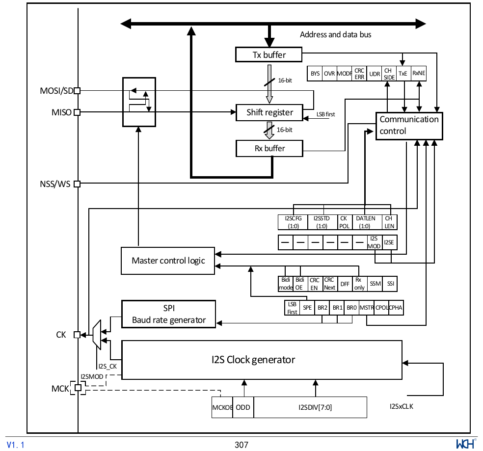
By setting the I2SMOD bit of the I2SCFGR register, the I2S function is enabled. At this point, the SPI module can be used as an I2S audio interface. I2S shares three pins with SPI:
When some external audio devices require a master clock, an additional pin can output the clock:
When configured as master mode, I2S uses its own clock generator to produce the clock signal for communication. This clock generator is also the clock source for the master clock output. In I2S mode there are 2 additional registers: one is the I2SPR register related to clock generator configuration, and the other is the I2S general configuration register I2SCFGR (which can set parameters such as audio standard, slave/master mode, data format, data packet frame, clock polarity, etc.). In I2S mode, the CTLR1 register and all CRCR registers are not used. Likewise, in I2S mode the SSOE bit of the CTLR2 register, and the MODF and CRCERR bits of the STATR register are not used. I2S uses the same DATAR register as SPI for 16-bit-wide mode data transfer.
The three-wire bus supports time-division multiplexing of audio data on 2 channels: left channel and right channel, but only one 16-bit register is used for transmission or reception. Therefore, software must write the corresponding data to the data register according to the channel currently being transmitted. Similarly, when reading register data, the CHSIDE bit of the STATR register is checked to determine which channel the received data belongs to. The left channel is always transmitted before the right channel (the CHSIDE bit has no meaning under the PCM protocol). There are four available data and packet frame combinations. Data can be sent in the following four data formats:
When extending 16-bit data to a 32-bit frame, the first 16 bits (MSB) are meaningful data and the last 16 bits (LSB) are forced to 0. This operation requires no software intervention and no additional DMA request (only one read or write operation is needed). The 24-bit and 32-bit data frames require the CPU to perform 2 read or write operations on the DATAR register; when using DMA, 2 DMA transfers are needed. For 24-bit data, after extension to 32 bits, the lowest 8 bits are set to 0 by hardware. For all data formats and communication standards, the most significant bit (MSB) is always sent first. The I2S interface supports four audio standards, selectable by setting the I2SSTD[1:0] bits and the PCMSYNC bit of the I2SCFGR register.
In this standard, the WS pin is used to indicate which channel the data being transmitted belongs to. The WS signal becomes active 1 clock cycle before the first data bit (MSB) is transmitted. The transmitter changes data on the falling edge of the clock signal (CK), and the receiver reads data on the rising edge. The WS signal also changes on the falling edge of the clock signal.
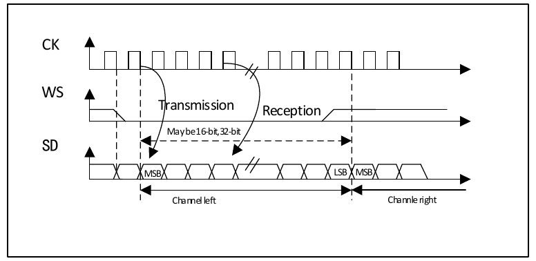
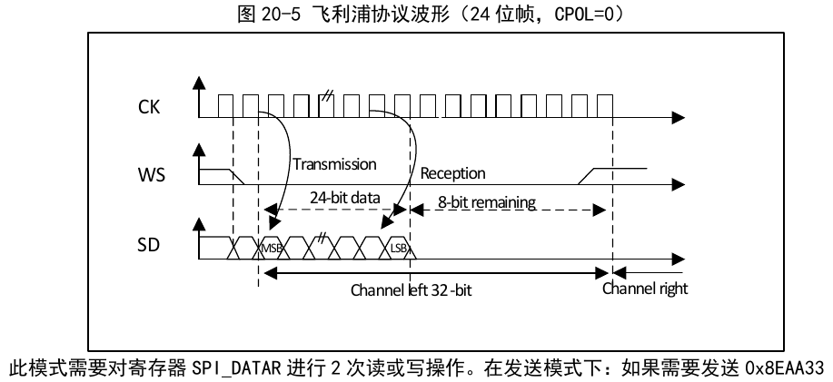
This mode requires 2 read or write operations to the SPI_DATAR register. In transmit mode, to send 0x8EAA33 (24-bit):
In receive mode, to receive 0x8EAA33:
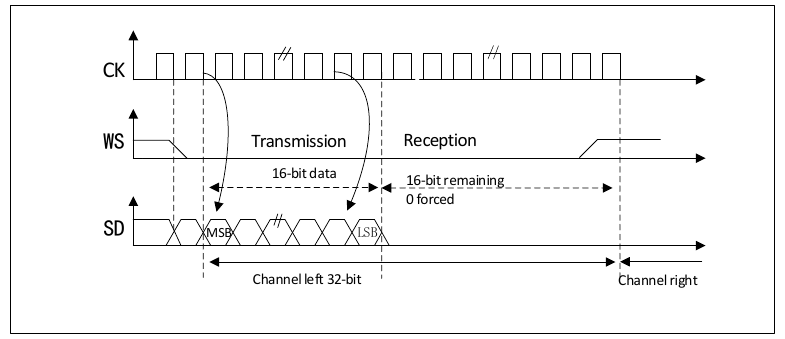
During the I2S configuration phase, if 16-bit data is selected to be extended to a 32-bit channel frame, only one access to the DATAR register is needed. The lower 16 bits used for extension to 32 bits are set to 0x0000 by hardware. If the data to be transmitted or received is 0x76A3 (extended to 32 bits: 0x76A30000), only one operation on DATAR is needed. When transmitting, the MSB must be written to the DATAR register; the TXE flag being 1 indicates that new data can be written, and if the corresponding interrupt is enabled, an interrupt can be generated. Transmission is completed by hardware; even before the trailing 16 bits of 0x0000 have been sent out, TXE is set and the corresponding interrupt is generated. When receiving, each time the upper 16-bit half-word (MSB) is received, the RXNE flag is set to 1, and if the corresponding interrupt is enabled, an interrupt can be generated. This gives more time between 2 reads and writes, preventing underflow or overflow conditions.
In this standard, the WS signal is generated simultaneously with the first data bit, i.e., the most significant bit (MSB).
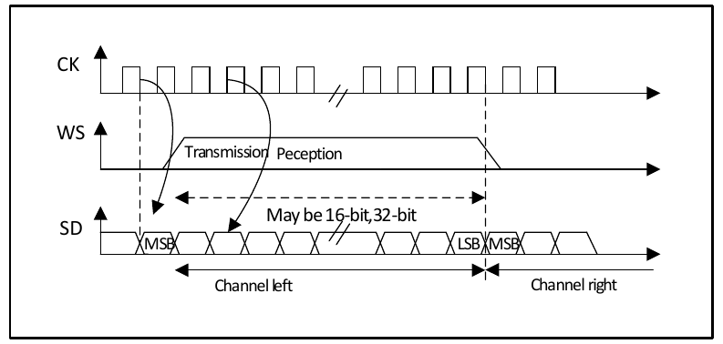
The transmitter changes data on the falling edge of the clock signal; the receiver reads data on the rising edge.
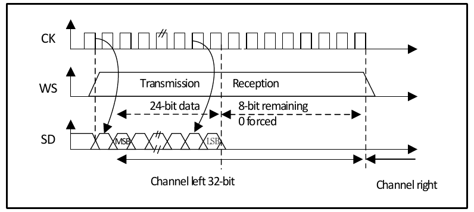
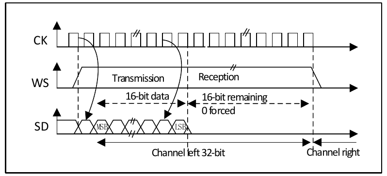
This standard is similar to the MSB-aligned standard (no difference in 16-bit or 32-bit full-precision frame format).
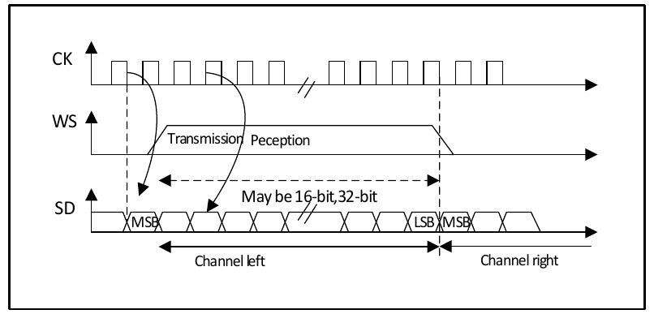
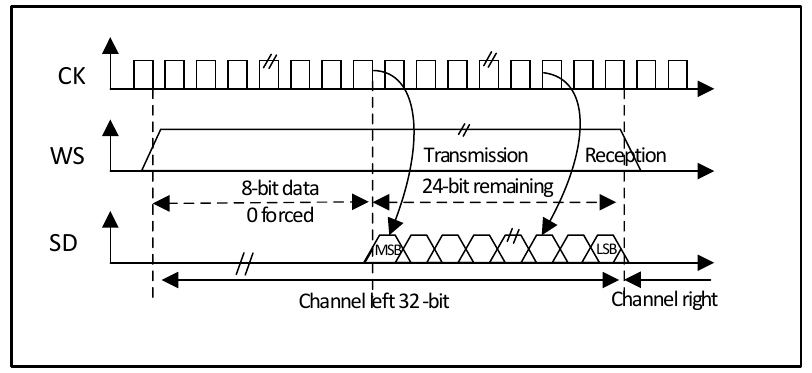
In transmit mode, to send data 0x3478AE, 2 write operations to the DATAR register are needed via software or DMA:
In receive mode, to receive data 0x3478AE, 1 read operation of the DATAR register is needed for each of 2 consecutive RXNE events:
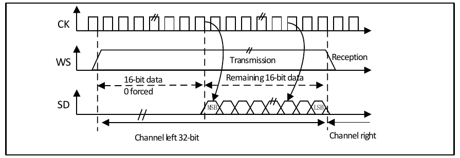
During the I2S configuration phase, if 16-bit data is selected to be extended to a 32-bit channel frame, only one access to the DATAR register is needed. At this point, the upper half-word (16-bit MSB) after extension to 32 bits is set to 0x0000 by hardware. If the data to be transmitted or received is 0x76A3 (extended to 32 bits: 0x000076A3), only one operation on DATAR is needed. When transmitting, if TXE is 1, the user needs to write the data to be transmitted (i.e., 0x76A3). The 0x0000 portion used for extension to 32 bits is sent out by hardware first; once valid data starts being sent from the SD pin, the next TXE event occurs. When receiving, once valid data is received (rather than the 0x0000 portion), the RXNE event occurs. This gives more time between 2 reads and writes, preventing underflow or overflow conditions.
In the PCM standard, there is no channel selection information. The PCM standard has 2 available frame structures: short frame or long frame, selectable by setting the PCMSYNC bit of the I2SCFGR register.
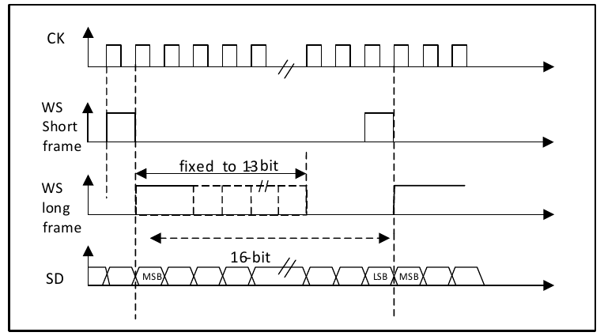
For the long frame, in master mode, the WS signal used for synchronization is active for a fixed duration of 13 bits. For the short frame, the WS signal used for synchronization is only 1 bit long.
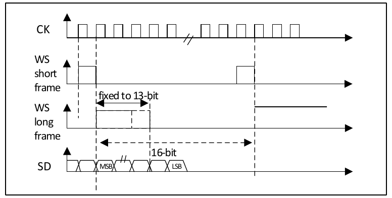
Regardless of the mode (master or slave) or the synchronization method (short frame or long frame), the time difference between 2 consecutive data frames and between 2 synchronization signals (even in slave mode) must be determined by setting the DATLEN and CHLEN bits of the I2SCFGR register.
The I2S bit rate determines the data stream on the I2S data line and the I2S clock signal frequency. I2S bit rate = number of bits per channel × number of channels × audio sampling frequency.
For a signal with left and right channels and 16-bit audio, the I2S bit rate is calculated as follows:
I2S bit rate = 16 × 2 × Fs
If the packet length is 32 bits, the I2S bit rate is calculated as follows:
I2S bit rate = 32 × 2 × Fs
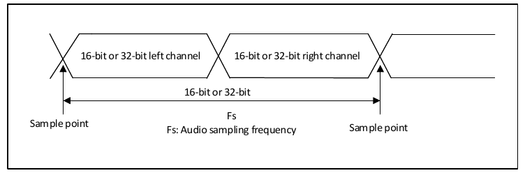
In master mode, to obtain the required audio frequency, the linear divider must be set correctly.
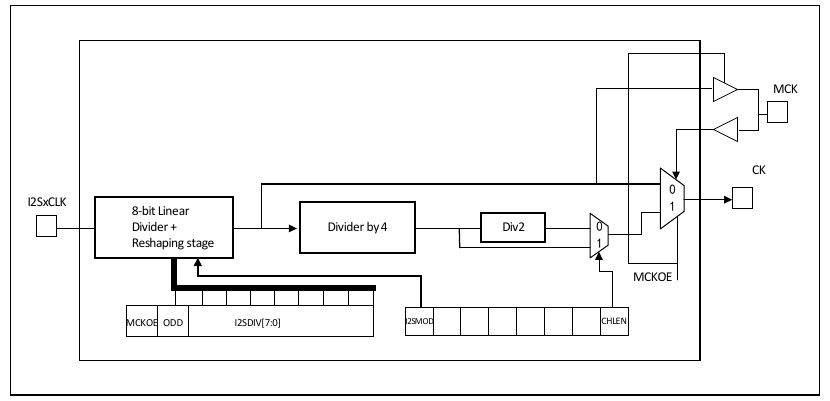
In the figure, the clock source of I2SxCLK is the system clock (i.e., the HSI, HSE, or PLL that drives the HB clock). I2SxCLK can come from SYSCLK, ETH_PLL, or USB_PLL clock, selectable via the I2S2SRC and I2S3SRC bits of the RCC_CFGR2 register. The audio sampling frequency can be 96 kHz, 48 kHz, 44.1 kHz, 32 kHz, 22.05 kHz, 16 kHz, 11.025 kHz, or 8 kHz (or any value within this range). To obtain the required frequency, set the linear divider according to the following formulas:
When the master clock needs to be generated (MCKOE bit of the SPI_I2SPR register is 1):
For 16-bit channel frame length: Fs = I2SxCLK / [(16×2) × ((2×I2SDIV) + ODD) × 8]
For 32-bit channel frame length: Fs = I2SxCLK / [(32×2) × ((2×I2SDIV) + ODD) × 4]
When the master clock is disabled (MCKOE bit is '0'):
For 16-bit channel frame length: Fs = I2SxCLK / [(16×2) × ((2×I2SDIV) + ODD)]
For 32-bit channel frame length: Fs = I2SxCLK / [(32×2) × ((2×I2SDIV) + ODD)]
To set I2S to operate in master mode, the serial clock is output from the CK pin, and the word select signal is generated from the WS pin. The MCKOE bit of the I2SPR register can be set to choose whether or not to output the master clock (MCK).
The transmit procedure begins when 1 half-word (16-bit) of data is written to the transmit buffer. Assume the first data written to the transmit buffer corresponds to the left channel. When data is moved from the transmit buffer to the shift register, the TXE flag is set, and the data corresponding to the right channel must be written to the transmit buffer. The CHSIDE flag indicates which channel the data currently being transmitted corresponds to. The CHSIDE flag value is updated when TXE is 1, so it is meaningful when TXE is 1. A complete data frame is considered complete only after both the left channel and then the right channel data have been transmitted. It is not permissible to transmit only a partial data frame, e.g., only left channel data.
When the first data bit is sent, the half-word data is transferred in parallel to the 16-bit shift register, and then the subsequent bits are sent out from the MOSI/SD pin in MSB-first order. Each time data is moved from the transmit buffer to the shift register, the TXE flag is set to 1; if the TXEIE bit of the CR2 register is 1, an interrupt is generated.
To ensure continuous audio data transmission, it is recommended to write the next data to be transmitted to the DATAR register before the current transmission completes. When disabling the I2S function, it is recommended to wait for TXE=1 and BSY=0, then clear the I2SE bit to '0'.
The configuration steps for the receive procedure are the same as for the transmit procedure (see "Transmit Procedure" above), except for step 3: the master receive mode must be selected by configuring I2SCFG[1:0]. Regardless of the data and channel length, audio data is always received in 16-bit packets. That is, each time the receive buffer is filled, the RXNE flag is set to 1; if the RXNEIE bit of the CR2 register is 1, an interrupt is generated. Depending on the configured data and channel length, receiving left or right channel data may require 1 or 2 transfers of data to the receive buffer. A read operation on the DATAR register clears the RXNE flag. CHSIDE is updated after each reception. Its value depends on the WS signal generated by the I2S unit. If the previously received data has not been read and new data is received, an overrun occurs, the OVR flag is set to 1, and if the ERRIE bit of the CR2 register is 1, an interrupt is generated indicating an error. To disable the I2S function, special operations are required to ensure the I2S module can properly complete the transmission cycle without starting a new data transfer. The procedure depends on the data configuration, channel length, and audio protocol mode:
16-bit data extended to 32-bit channel length (DATLEN=00 and CHLEN=1), using LSB-aligned mode (I2SSTD=10):
16-bit data extended to 32-bit channel length (DATLEN=00 and CHLEN=1), using MSB-aligned, I2S, or PCM mode (I2SSTD=00, I2SSTD=01, or I2SSTD=11 respectively):
All other combinations of DATLEN and CHLEN, with any audio mode selected by I2SSTD, disable I2S as follows:
In slave mode, I2S can be set to transmit and receive modes. The slave mode configuration basically follows the same procedure as master mode configuration. In slave mode, the I2S interface does not need to provide a clock. The clock signal and WS signal are provided by the external master I2S device, connected to the corresponding pins. Therefore, the user does not need to configure the clock.
Configuration steps are as follows:
When the external master device sends a clock signal and the NSS_WS signal requests data transfer, the transmit procedure begins. The slave must be enabled and data written to the I2S data register before the external master can begin communication. For I2S MSB-aligned and LSB-aligned modes, the first data item written to the data register corresponds to the left channel data. When communication starts, data is transferred from the transmit buffer to the shift register, and the TXE flag is set to 1; at this point, the data item corresponding to the right channel must be written to the I2S data register. The CHSIDE flag indicates which channel the data currently being transmitted corresponds to. Compared to the master mode transmit procedure, in slave mode CHSIDE depends on the WS signal from the external master I2S. This means the slave I2S must have the first data to be transmitted ready before receiving the clock signal generated by the master. A WS signal of 1 indicates that the left channel is sent first.
The configuration steps are the same as the transmit procedure, except for step 1. The master receive mode must be selected by configuring I2SCFG[1:0]. Regardless of the data and channel length, audio data is always received in 16-bit packets, i.e., each time the receive buffer is filled, the RXNE flag is set to 1; if the RXNEIE bit of the I2S_CTLR2 register is 1, an interrupt is generated. Depending on the data and channel length settings, receiving left or right channel data may require 1 or 2 transfers of data to the receive buffer. CHSIDE is updated after each data reception (about to be read from DATAR), corresponding to the WS signal generated by the I2S unit. Reading the SPI_DATAR register clears the RXNE bit. When new data is received before the previously received data has been read, an overrun occurs and the OVR flag is set to 1; if the ERRIE bit of the I2S_CTLR2 register is 1, an interrupt is generated indicating an error. To disable the I2S function, the I2SE bit must be cleared to 0 upon receiving the last RXNE=1.
There are 3 status flags for the user to monitor the status of the I2S bus.
The BSY flag is set and cleared by hardware (writing to this bit has no effect). This flag indicates the status of the I2S communication layer. When this bit is 1, it indicates I2S communication is in progress, with one exception: in master receive mode (I2SCFG=11), the BSY flag is always low during reception. Before software disables the SPI module, the BSY flag can be used to detect whether transmission has ended, avoiding corruption of the last transmission. The following procedure must be strictly followed. When transmission starts, the BSY flag is set to 1 unless the I2S module is in master receive mode. When transmission ends or when the I2S module is disabled, this flag is cleared. In continuous communication, in master transmit mode, the BSY flag remains high throughout the entire transmission; in slave mode, the BSY flag goes low for 1 I2S clock cycle between each data item transmission.
This flag being 1 indicates the transmit buffer is empty and new data to be transmitted can be written to the transmit buffer. When the transmit buffer already contains data, the flag is cleared to 0. When I2S is disabled (I2SE bit is 0), this flag is also 0.
This flag being set to 1 indicates that valid received data is in the receive buffer. When the DATAR register is read, this bit is cleared to 0.
In transmit mode, this flag is updated when TXE is high, indicating the channel of the data being sent from the SD pin. If an underflow error occurs in slave transmit mode, the flag value is invalid; the I2S must be disabled and re-enabled before resuming communication. In receive mode, this flag is updated when data is received in the DATAR register, indicating the channel of the received data. Note: if an error occurs, this flag is meaningless; the I2S must be disabled and re-enabled. Under the PCM standard, this flag has no meaning in either short-frame or long-frame format. If the OVR or UDR flag of the STATR register is 1, and the ERRIE bit of the CR2 register is 1, an interrupt is generated. (After the interrupt source has been cleared) the interrupt flag can be cleared by reading the STATR register.
In slave transmit mode, if new data has not been written to the DATAR register when the first clock edge of data transfer arrives, this flag is set to 1. This flag is valid only after the I2SMOD bit of the I2SCFGR register is set to 1. If the ERRIE bit of the CR2 register is 1, an interrupt is generated. This flag is cleared by performing a read operation on the STATR register.
If new data is received before the previously received data has been read, an overrun occurs and this flag is set to 1. If the ERRIE bit of the CTLR2 register is 1, an interrupt is generated indicating an error. In this case, the content of the receive buffer is not updated with the new data from the transmitting device. A read operation on the DATAR register returns the last correctly received data. All other 16-bit data sent by the transmitter after the overrun occurs are lost. This flag is cleared by first reading the DATAR register and then reading the STATR register.
I2S has 4 interrupt sources. The transmit buffer empty and receive buffer not empty events set TXE and RXNE respectively, generating interrupts when TXEIE and RXNEIE are set. If new data is received before the previously received data has been read, an overrun occurs; if ERRIE is set, an overrun interrupt is generated. In slave transmit mode, if new data has not been written to the DATAR register when the first clock edge of data transfer arrives, if ERRIE is set, an underflow interrupt is generated.
The DMA operation in I2S mode is identical to that in SPI mode, except that the CRC function is not available. This is because there is no data transfer protection system in I2S mode.
| Name | Address | Description | Reset Value |
|---|---|---|---|
| R16_SPI1_CTLR1 | 0x40013000 | SPI1 control register 1 | 0x0000 |
| R16_SPI1_CTLR2 | 0x40013004 | SPI1 control register 2 | 0x0000 |
| R16_SPI1_STATR | 0x40013008 | SPI1 status register | 0x0002 |
| R16_SPI1_DATAR | 0x4001300C | SPI1 data register | 0x0000 |
| R16_SPI1_CRCR | 0x40013010 | SPI1 polynomial register | 0x0007 |
| R16_SPI1_RCRCR | 0x40013014 | SPI1 receive CRC register | 0x0000 |
| R16_SPI1_TCRCR | 0x40013018 | SPI1 transmit CRC register | 0x0000 |
| R16_SPI1_I2S_CFGR | 0x4001301C | SPI1_I2S configuration register | 0x0000 |
| R16_SPI1_HSCR | 0x40013024 | SPI1 high-speed control register | 0x0000 |
| Name | Address | Description | Reset Value |
|---|---|---|---|
| R16_SPI2_CTLR1 | 0x40003800 | SPI2 control register 1 | 0x0000 |
| R16_SPI2_CTLR2 | 0x40003804 | SPI2 control register 2 | 0x0000 |
| R16_SPI2_STATR | 0x40003808 | SPI2 status register | 0x0002 |
| R16_SPI2_DATAR | 0x4000380C | SPI2 data register | 0x0000 |
| R16_SPI2_CRCR | 0x40003810 | SPI2 polynomial register | 0x0007 |
| R16_SPI2_RCRCR | 0x40003814 | SPI2 receive CRC register | 0x0000 |
| R16_SPI2_TCRCR | 0x40003818 | SPI2 transmit CRC register | 0x0000 |
| R16_SPI2_I2S_CFGR | 0x4000381C | SPI2_I2S configuration register | 0x0000 |
| R16_SPI2_I2SPR | 0x40003820 | SPI2_I2S prescaler register | 0x0000 |
| R16_SPI2_HSCR | 0x40003824 | SPI2 high-speed control register | 0x0000 |
| Name | Address | Description | Reset Value |
|---|---|---|---|
| R16_SPI3_CTLR1 | 0x40003C00 | SPI3 control register 1 | 0x0000 |
| R16_SPI3_CTLR2 | 0x40003C04 | SPI3 control register 2 | 0x0000 |
| R16_SPI3_STATR | 0x40003C08 | SPI3 status register | 0x0002 |
| R16_SPI3_DATAR | 0x40003C0C | SPI3 data register | 0x0000 |
| R16_SPI3_CRCR | 0x40003C10 | SPI3 polynomial register | 0x0007 |
| R16_SPI3_RCRCR | 0x40003C14 | SPI3 receive CRC register | 0x0000 |
| R16_SPI3_TCRCR | 0x40003C18 | SPI3 transmit CRC register | 0x0000 |
| R16_SPI3_I2S_CFGR | 0x40003C1C | SPI3_I2S configuration register | 0x0000 |
| R16_SPI3_I2SPR | 0x40003C20 | SPI3_I2S prescaler register | 0x0000 |
| R16_SPI3_HSCR | 0x40003C24 | SPI3 high-speed control register | 0x0000 |
Offset address: 0x00
| 15 | 14 | 13 | 12 | 11 | 10 | 9 | 8 | 7 | 6 | 5 | 4 | 3 | 2 | 1 | 0 |
|---|---|---|---|---|---|---|---|---|---|---|---|---|---|---|---|
| BIDIMODE | BIDIOE | CRCEN | CRCNEXT | DFF | RXONLY | SSM | SSI | LSBFIRST | SPE | BR[2:0] | MSTR | CPOL | CPHA | ||
| Bits | Name | Access | Description | Reset |
|---|---|---|---|---|
| 15 | BIDIMODE | RW | Unidirectional data mode enable bit. 1: Select single-wire bidirectional mode; 0: Select two-wire bidirectional mode. | 0 |
| 14 | BIDIOE | RW | Single-wire output enable bit, used together with BIDIMODE. 1: Enable output, transmit only; 0: Disable output, receive only. | 0 |
| 13 | CRCEN | RW | Hardware CRC verification enable bit. This bit can only be written when SPE is 0. This bit can only be used in full-duplex mode. 1: Enable CRC calculation; 0: Disable CRC calculation. | 0 |
| 12 | CRCNEXT | RW | Transmit the CRC register value after the next data transfer. This bit should be set immediately after writing the last data to the data register. 1: Transmit CRC verification result; 0: Continue transmitting data register data. | 0 |
| 11 | DFF | RW | Data frame length bit. This bit can only be written when SPE is 0. 1: Use 16-bit data length for transmit/receive; 0: Use 8-bit data length for transmit/receive. | 0 |
| 10 | RXONLY | RW | Receive-only bit in two-wire mode, used together with BIDIMODE. Setting this bit allows the device to only receive without transmitting. 1: Receive only, simplex mode; 0: Full-duplex mode. | 0 |
| 9 | SSM | RW | Chip select pin management bit. This bit determines whether the NSS pin level is controlled by hardware or software. 1: Software controls NSS pin; 0: Hardware controls NSS pin. | 0 |
| 8 | SSI | RW | Chip select pin control bit. When SSM is set, this bit determines the NSS pin level. 1: NSS is high; 0: NSS is low. | 0 |
| 7 | LSBFIRST | RW | Frame format control bit. This bit cannot be modified during communication. 1: Send LSB first; 0: Send MSB first. | 0 |
| 6 | SPE | RW | SPI enable bit. 1: Enable SPI; 0: Disable SPI. | 0 |
| [5:3] | BR[2:0] | RW | Baud rate setting field. This field cannot be modified during communication. When HSRXEN bit is 0, SCK frequency is: 000: FPCLK/2; 001: FPCLK/4; 010: FPCLK/8; 011: FPCLK/16; 100: FPCLK/32; 101: FPCLK/64; 110: FPCLK/128; 111: FPCLK/256. When HSRXEN bit is 1, SCK frequency is: 000: FPCLK/2; 001: FPCLK/3; 010: FPCLK/4; 011: FPCLK/5; 100: FPCLK/6; 101: FPCLK/7; 110: FPCLK/8; 111: FPCLK/9. | 000b |
| 2 | MSTR | RW | Master/slave selection bit. This bit cannot be modified during communication. 1: Configure as master device; 0: Configure as slave device. | 0 |
| 1 | CPOL | RW | Clock polarity selection bit. This bit cannot be modified during communication. 1: SCK stays high in idle state; 0: SCK stays low in idle state. | 0 |
| 0 | CPHA | RW | Clock phase setting bit. This bit cannot be modified during communication. 1: Data sampling starts from the second clock edge; 0: Data sampling starts from the first clock edge. | 0 |
Offset address: 0x04
| 15 | 14 | 13 | 12 | 11 | 10 | 9 | 8 | 7 | 6 | 5 | 4 | 3 | 2 | 1 | 0 |
|---|---|---|---|---|---|---|---|---|---|---|---|---|---|---|---|
| Reserved | TXEIE | RXNEIE | ERRIE | Reserved | SSOE | TXDMAEN | RXDMAEN | ||||||||
| Bits | Name | Access | Description | Reset |
|---|---|---|---|---|
| [15:8] | Reserved | RO | Reserved. | 0 |
| 7 | TXEIE | RW | Transmit buffer empty interrupt enable bit: 1: Enable interrupt when TXE is set; 0: Disable interrupt when TXE is set. | 0 |
| 6 | RXNEIE | RW | Receive buffer not empty interrupt enable bit: 1: Enable interrupt when RXNE is set; 0: Disable interrupt when RXNE is set. | 0 |
| 5 | ERRIE | RW | Error interrupt enable bit: 1: Enable interrupt on error (CRCERR, OVR, MODF); 0: Disable interrupt on error (CRCERR, OVR, MODF). | 0 |
| [4:3] | Reserved | RO | Reserved. | 0 |
| 2 | SSOE | RW | SS output enable. Disabling SS output allows operation in multi-master mode. 1: Enable SS output; 0: Disable SS output in master mode. | 0 |
| 1 | TXDMAEN | RW | Transmit buffer DMA enable bit. 1: Enable transmit buffer DMA; 0: Disable transmit buffer DMA. | 0 |
| 0 | RXDMAEN | RW | Receive buffer DMA enable bit. 1: Enable receive buffer DMA; 0: Disable receive buffer DMA. | 0 |
Offset address: 0x08
| 15 | 14 | 13 | 12 | 11 | 10 | 9 | 8 | 7 | 6 | 5 | 4 | 3 | 2 | 1 | 0 |
|---|---|---|---|---|---|---|---|---|---|---|---|---|---|---|---|
| Reserved | BSY | OVR | MODF | CRCERR | UDR | CHSIDE | TXE | RXNE | |||||||
| Bits | Name | Access | Description | Reset |
|---|---|---|---|---|
| [15:8] | Reserved | RO | Reserved. | 0 |
| 7 | BSY | RO | Busy flag bit. This bit is set or cleared by hardware. 1: SPI is communicating, or transmit buffer is not empty; 0: SPI is not communicating. | 0 |
| 6 | OVR | RO | Overrun flag bit. This bit is set by hardware, cleared by software. 1: Overrun error occurred; 0: No overrun error. | 0 |
| 5 | MODF | RO | Mode fault flag bit. This bit is set by hardware, cleared by software. 1: Mode fault occurred; 0: No mode fault. | 0 |
| 4 | CRCERR | RW0 | CRC error flag bit. This bit is set by hardware, cleared by software. 1: Received CRC value does not match RCRCR value; 0: Received CRC value matches RCRCR value. | 0 |
| 3 | UDR | RO | Underflow flag bit. This bit is set by hardware, cleared by software. 1: Underflow occurred; 0: No underflow. | 0 |
| 2 | CHSIDE | RO | Channel. This bit is set by hardware, cleared by software. 1: Right channel to be transmitted or received; 0: Left channel to be transmitted or received. | 0 |
| 1 | TXE | RO | Transmit buffer empty flag bit: 1: Transmit buffer is empty; 0: Transmit buffer is not empty. | 1 |
| 0 | RXNE | RO | Receive buffer not empty flag bit: 1: Receive buffer is not empty; 0: Receive buffer is empty. Note: Reading DATAR automatically clears this bit. | 0 |
Offset address: 0x0C
| 15 | 14 | 13 | 12 | 11 | 10 | 9 | 8 | 7 | 6 | 5 | 4 | 3 | 2 | 1 | 0 |
|---|---|---|---|---|---|---|---|---|---|---|---|---|---|---|---|
| DR[15:0] | |||||||||||||||
| Bits | Name | Access | Description | Reset |
|---|---|---|---|---|
| [15:0] | DR[15:0] | RW | Data register. The data register is used to store received data or pre-store data to be transmitted. Therefore, reads and writes of the data register actually correspond to different areas: reads correspond to the receive buffer, writes correspond to the transmit buffer. Data reception and transmission can be 8-bit or 16-bit; the number of data bits must be determined before transmission. When using 8-bit data transfer, only the lower 8 bits of the data register are used, and the upper 8 bits are forced to 0 upon reception. Using 16-bit data structure causes all 16 bits of the data register to be used. | 0 |
Offset address: 0x10
| 15 | 14 | 13 | 12 | 11 | 10 | 9 | 8 | 7 | 6 | 5 | 4 | 3 | 2 | 1 | 0 |
|---|---|---|---|---|---|---|---|---|---|---|---|---|---|---|---|
| CRCPOLY[15:0] | |||||||||||||||
| Bits | Name | Access | Description | Reset |
|---|---|---|---|---|
| [15:0] | CRCPOLY[15:0] | RW | CRC polynomial. This field defines the polynomial used for CRC calculation. | 0x0007 |
Offset address: 0x14
| 15 | 14 | 13 | 12 | 11 | 10 | 9 | 8 | 7 | 6 | 5 | 4 | 3 | 2 | 1 | 0 |
|---|---|---|---|---|---|---|---|---|---|---|---|---|---|---|---|
| RXCRC[15:0] | |||||||||||||||
| Bits | Name | Access | Description | Reset |
|---|---|---|---|---|
| [15:0] | RXCRC[15:0] | RO | Receive CRC value. Stores the calculated CRC verification result of received bytes. Setting CRCEN resets this register. The calculation method uses the polynomial defined by CRCPOLY. In 8-bit mode, only the lower 8 bits participate in the calculation; in 16-bit mode, all 16 bits participate. This register should be read when BSY is 0. | 0 |
Offset address: 0x18
| 15 | 14 | 13 | 12 | 11 | 10 | 9 | 8 | 7 | 6 | 5 | 4 | 3 | 2 | 1 | 0 |
|---|---|---|---|---|---|---|---|---|---|---|---|---|---|---|---|
| TXCRC[15:0] | |||||||||||||||
| Bits | Name | Access | Description | Reset |
|---|---|---|---|---|
| [15:0] | TXCRC[15:0] | RO | Transmit CRC value. Stores the calculated CRC verification result of transmitted bytes. Setting CRCEN resets this register. The calculation method uses the polynomial defined by CRCPOLY. In 8-bit mode, only the lower 8 bits participate in the calculation; in 16-bit mode, all 16 bits participate. This register should be read when BSY is 0. | 0 |
Offset address: 0x1C
| 15 | 14 | 13 | 12 | 11 | 10 | 9 | 8 | 7 | 6 | 5 | 4 | 3 | 2 | 1 | 0 |
|---|---|---|---|---|---|---|---|---|---|---|---|---|---|---|---|
| Reserved | I2SMOD | I2SE | I2SCFG[1:0] | PCMSYNC | Reserved | I2SSTD[1:0] | CKPOL | DATLEN[1:0] | CHLEN | ||||||
| Bits | Name | Access | Description | Reset |
|---|---|---|---|---|
| [15:12] | Reserved | RO | Reserved. | 0 |
| 11 | I2SMOD | RW | I2S mode selection. This bit can only be set when SPI or I2S is disabled. 1: Select I2S mode; 0: Select SPI mode. | 0 |
| 10 | I2SE | RW | I2S enable. Not used in SPI mode. 1: I2S enabled; 0: I2S disabled. | 0 |
| [9:8] | I2SCFG[1:0] | RW | I2S mode selection. This bit can only be set when I2S is disabled: 00: Slave transmit; 01: Slave receive; 10: Master transmit; 11: Master receive. | 00b |
| 7 | PCMSYNC | RW | PCM frame synchronization. This bit is meaningful only when I2SSTD = 11 (PCM standard). 1: Long frame synchronization; 0: Short frame synchronization. | 0 |
| 6 | Reserved | RO | Reserved. | 0 |
| [5:4] | I2SSTD[1:0] | RW | I2S standard selection. This bit can only be set when I2S is disabled. 00: I2S Philips standard; 01: MSB-aligned standard (left-aligned); 10: LSB-aligned standard (right-aligned); 11: PCM standard. | 00b |
| 3 | CKPOL | RW | Steady-state clock polarity. For correct operation, this bit can only be set when I2S is disabled. 1: I2S clock steady state is high; 0: I2S clock steady state is low. | 0 |
| [2:1] | DATLEN[1:0] | RW | Data length to be transmitted. For correct operation, this bit can only be set when I2S is disabled. 00: 16-bit data length; 01: 24-bit data length; 10: 32-bit data length; 11: Not allowed. | 00b |
| 0 | CHLEN | RW | Channel length. Writing this bit is meaningful only when DATLEN = 00; otherwise the channel length is fixed to 32 bits by hardware. 1: 32-bit wide; 0: 16-bit wide. | 0 |
Offset address: 0x20
| 15 | 14 | 13 | 12 | 11 | 10 | 9 | 8 | 7 | 6 | 5 | 4 | 3 | 2 | 1 | 0 |
|---|---|---|---|---|---|---|---|---|---|---|---|---|---|---|---|
| Reserved | MCKOE | ODD | I2SDIV[7:0] | ||||||||||||
| Bits | Name | Access | Description | Reset |
|---|---|---|---|---|
| [15:10] | Reserved | RO | Reserved. | 0 |
| 9 | MCKOE | RW | Master clock output enable. For correct operation, this bit can only be set when I2S is disabled. Used only in I2S master mode. 1: Master clock output enabled; 0: Master clock output disabled. | 0 |
| 8 | ODD | RW | Odd factor prescaler. For correct operation, this bit can only be set when I2S is disabled. Used only in I2S master mode. 1: Actual division factor = (I2SDIV × 2) + 1; 0: Actual division factor = I2SDIV × 2. | 0 |
| [7:0] | I2SDIV[7:0] | RW | I2S linear prescaler. For correct operation, this bit can only be set when I2S is disabled. Used only in I2S master mode. Setting I2SDIV[7:0] = 0 or I2SDIV[7:0] = 1 is prohibited. See section 20.3.3. | 0 |
Offset address: 0x24
| 15 | 14 | 13 | 12 | 11 | 10 | 9 | 8 | 7 | 6 | 5 | 4 | 3 | 2 | 1 | 0 |
|---|---|---|---|---|---|---|---|---|---|---|---|---|---|---|---|
| Reserved | I2S_WS_SYNC | HSRXEN2 | Reserved | HSRXEN | |||||||||||
| Bits | Name | Access | Description | Reset |
|---|---|---|---|---|
| [15:4] | Reserved | RO | Reserved. | 0 |
| 3 | I2S_WS_SYNC | RW | Enhanced I2S slave synchronization capability: 1: Enabled; 0: Disabled. | 0 |
| 2 | HSRXEN2 | RW | SPI high-speed read mode 2: This mode is only used when HSRXEN is enabled and SPI PCLK is ≥ 120 MHz; below 120 MHz, using this bit is not recommended. Can achieve higher master read speed than enabling HSRXEN alone. 1: Enable high-speed read mode 2; 0: Disable high-speed read mode 2. | 0 |
| 1 | Reserved | RO | Reserved. | 0 |
| 0 | HSRXEN | RW | High-speed read mode enable bit: 1: Enable high-speed read mode; 0: Disable high-speed read mode. This mode is only valid when the clock is divided by 2 (i.e., BR = 000 in the CTLR1 register). | 0 |